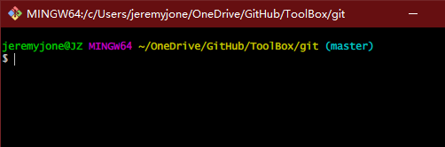

Linux 下
sudo apt-get install git
老一点的 Debian 或 Ubuntu Linux，要把命令改为
sudo apt-get install git-core

一是安装 homebrew，然后通过 homebrew 安装 Git，具体方法请参考 homebrew 的文档：http://brew.sh/。
第二种方法更简单，也是推荐的方法，就是直接从 AppStore 安装 Xcode，Xcode 集成了 Git，不过默认没有安装，你需要运行 Xcode，选择菜单“Xcode”->“Preferences”，在弹出窗口中找到“Downloads”，选择“Command Line Tools”，点“Install”就可以完成安装了。
安装完成后，可以在 shell 或 bash 中查看 git
git --version
显示当前安装的 git 版本信息，说明已经安装成功了。
提交名字
git config --global user.name "yourname"
提交邮箱
git config --global user.email "yourname@example.com"
创建 SSH
ssh-keygen -t rsa -C "youremail@example.com"
将新生成的 SSH 全部拷贝并添加到远程仓库的相应设置中。
初始化本地仓库
git init
检查多余的空白字符
git diff --check
将文件放入暂存区
存放指定文件
git add filename
将文件的修改、新建添加到暂存区
git add . //注意add后面是一个点,你没看错
将文件的修改、删除添加到暂存区
git add -u
将文件的修改、删除和新建添加到暂存区
git add -A
查看文件修改与提交情况
git status
将修改提交版本库
git commit -m "desc"
// 多行desc // 这里需要先暂时输入一个单引号，然后写多行信息，写完之后再输入下一个单引号 git commit -m ' 1. log1 2. log2 3. log3 '
重新提交
git commit --amend -m "desc"
撤销对工作区文件的修改，若修改后没有放到暂存区，则与上个版本一致，若修改后放到暂存区，则和暂存区一致。
git checkout -- filename
取消暂存区的指定文件
git reset HEAD filename
删除本地文件，不再纳入版本管理
git rm filename
不纳入版本管理，但本地不删除文件
git rm --cached filename
查看提交日志
git log // 从近到远显示提交日志
git log --pretty=oneline // 将每个提交记录放在一行显示，其它参数：oneline、short、full、fuller等
git log --stat | perl -ne 'END { print $c } $c += $1 if /(\d+) insertions/;' # 指定起始日期开始 git log --stat --since 2020-06-01 |perl -ne 'END { print $c } $c += $1 if /(\d+) insertions/;'
git log --since 2020-06-01 # 统计日志的行数 git log --since 2020-06-01 | wc -l
git log --oneline | wc -l
git log --author="$(git config --get user.name)" --pretty=tformat: --numstat| gawk '{ add += $1 ; subs += $2 ; loc += $1 - $2 } END { printf "added lines: %s removed lines : %s total lines: %s\n",add,subs,loc }' # 上面的方法可以直接使用，会使用当前账户的用户，如果想查看其他人，可以将--author后面的参数直接换成指定用户名即可。例如： git log --author="jeremyjone" --pretty=tformat: --numstat| gawk '{ add += $1 ; subs += $2 ; loc += $1 - $2 } END { printf "added lines: %s removed lines : %s total lines: %s\n",add,subs,loc }'
git log --pretty='%aN' | sort | uniq -c | sort -k1 -n -r # 查看前几名，比如 5 git log --pretty='%aN' | sort | uniq -c | sort -k1 -n -r | head -n 5
删除某个提交
git log // 获取提交信息 git rebase -i (commit-id) // commit-id 为提交版本的hash code
**注意：** 这里有个坑，commit-id 是需要删除的前一个 hash code，用图说明：

使用命令后，打开一个文件，将需要删除版本前面的 pick 改为 drop，用图说明：

修改后保存关闭，`ZZ` 或者 `:wq`，vim 的命令这里不赘述。
退出后使用`git log`再次查看，可以看到对应版本已经没有了。
### - 回退
- 记录回退的命令
```shell
git reflog
```
- 回退到上一版本
```shell
git reset --hard HEAD
```
- 回退到指定版本
```shell
git reset --hard 哈希值 // 哈希值可以使用reflog命令查看
```
### - 分支
- 查看分支
```shell
git branch
```
- 创建分支
```shell
git branch branchname
```
- 切换分支
```shell
git checkout branchname
git checkout -b branchname // 创建并切换到该分支
git checkout -f branchname // 强制切换到该分支
```
- 删除分支
```shell
git branch -D branchname
```
- 合并分支
```shell
git merge branchname
```
- 查看合并记录
```shell
git log --graph --pretty=oneline --abbrev-commit // 查看分支合并情况
git branch --merged // 查看已合并到当前分支的分支、上游分支
git branch --no-merged // 查看尚未合并的分支
```
### - 操作 git 中的文件
- 查看 git 占用空间
```shell
du -sh
```
- 查找 git 中的文件
```shell
git verify-pack -v .git/objects/pack/pack-*.idx | sort -k 3 -g | tail -5 // 找出git中占空间最大的前5个文件的id
git rev-list --objects --all | grep . // 查看文件列表，可以和grep一起使用，grep后跟需要查找的文件名或id
```
- 删除匹配的\*.rar 文件
```shell
git filter-branch --force --index-filter 'git rm --cached --ignore-unmatch *.rar' --prune-empty --tag-name-filter cat -- --all
```
- 回收空间
```shell
rm -rm .git/refs/original
git reflog expire --expire=now --all
git gc --prune=now
git gc --aggressive --prune=now
```
### - 比较
- 比较工作区与暂存区的差异
```shell
git diff
```
- 比较工作区与当前分支库的差异
```shell
git diff HEAD
git diff HEAD -- path // 与当前分支库同一目录比较
```
- 比较暂存区与版本库的差异
```shell
git diff --cached (或 --staged)
```
- 比较不同版本库中不同文件的差异
```shell
git diff HEAD:filename HEAD:filename
```
- 查看每次提交差异
```shell
git log -p -2 // 查询每次提交的行差异， 2查询的是提交次数，-p是展开显示每次提交的内容差异
git log -U1 --word-diff // 查询每次提交的单词差异
git log --stat // 显示改动的概要信息
```
### - 标签
- 查看标签
```shell
git tag
```
- 创建标签
```shell
git tag content // content填写标签内容
```
- 删除本地标签
```shell
git tag -d content
```
- 发布标签
```shell
git push -u origin content
```
- 删除远程标签
```shell
git push origin --delete tag content
```
## 远程操作
- 查看仓库信息
```shell
git remote
```
- 克隆远程仓库到本地
```shell
git clone [url] // [url]从远程仓库获取
```
- 拉取所有远程分支到本地
```shell
git branch -r | grep -v '\->' | while read remote; do git branch --track "${remote#origin/}" "$remote"; done
git fetch --all
git pull --all
```
- 添加远程仓库
```shell
git remote add [name] [url]
```
- 将远程仓库分支添加到本地
```shell
git fetch origin mbranchname
```
- 更新分支
```shell
git pull // 更新当前分支
git pull branchname master // 获取并合并远程分支到本地master分支
git pull origin branchname // 将远程仓库分支拉取到本地
```
- 推送分支
```shell
git push // 向远程仓库推送当前分支
git push -f ... // 强制推送
git push branchname master // 向远程仓库推送master分支
git push origin branchname // 将本地仓库提交到远程仓库
git push -u origin branchname // 第一次推送时需要 -u 参数
```
- 合并分支
```shell
git merge fork // 将fork分支合并到当前分支
git checkout fork a.c b.c // 将fork分支的a.c b.c文件强制覆盖当前分支的对应文件
git merge origin branchname // 将本地分支与远程分支合并
git mergetool // 使用工具比较查看冲突
```
- 将最近两次提交合并为一个提交，并强制提交到远程仓库
```shell
git reset --soft HEAD
git commit -m "..."
git push --force
```
- _实例_
<font color="#0E6DB0">将共享库添加到自己的仓库并拉到本地</font>
```shell
git remote add gitignore https://github.com/github/gitignore
git pull origin gitignore
```